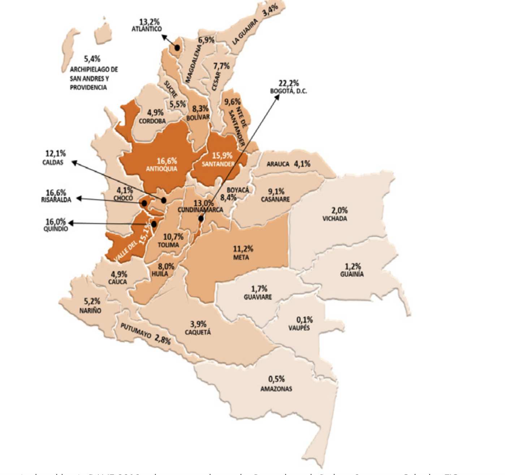

There is a very specific type of profile people usually picture when they think about coders or “hackers”. Because of the nature of computer programming, the way people think of people who have the ability to write code is what has been portrayed by the mainstream media. On the other hand, my very own engineering classmates see me in a totally different light. Like some of the readings, they share the feeling that computer science students are not deserving of the title of “Engineer” because what we do is so different than what they do, and our way of accomplishing our goals is unconventional from any other type of engineering process. The fact that our creative process is iterative as opposed to empirical makes it seems to them as if it were less of an engineering process and more like an improvisation one.
 Mr. Robot-- A hollywood Hacker classic
Mr. Robot-- A hollywood Hacker classic
The many different perceptions of what programmers are made me question how I view myself. I had a hard time with labels for most of my years at Notre Dame. I didn’t think I fit the characteristics of the stereotypical engineer label when I was a freshman, but I also didn’t think I fit the profile of a hollywood hacker. I didn’t realize I rejected these stereotypical labels because I had not been able to define a word that I could identify with. Then I read Paul Graham’s essay on painters and hackers. I finally felt identified. I felt I could finally define myself. I am a hacker. However, I am not the hollywood definition of a hacker. I am the hack Graham described. A mess of creativity and all-over-the-place maker. I like to code to make cool things. Make things. I realized the very entrepreneurs I looked up to since I was a kid— Steve Jobs, Bill Gates, Mark Zuckerberg— they were all hackers in Paul Graham’s sense. It is the very essence of the Open Source culture. I want to be like them. In fact I had an attitude like them already and I had shown that in many ways I had not realized.
But to ignore where I come from and why I am at Notre Dame would be a disservice to myself and those around me. I want to embody the true definition of a hacker when I go out into the workforce. Nevertheless, I have to be true to the fact that I can offer much more than just good code to a company. I did not have the same upbringing as the men in the tech industry I look up to so much. I come from a small city in Colombia called Villavicencio. In most parts of the state where this city is located, people barely have access to 2G mobile technology. In fact, in the whole region, internet access in the homes is at a staggering 11,2%. I was the first person from this region of Colombia to attend Notre Dame. It seems unfair that I dismiss this fact, or get sidetracked when thinking about my future, because suddenly I have a revolving door of opportunities I never even dreamed of here at Notre Dame. I owe to myself to think about my country and my heritage when looking to the future. I don’t come from a region of privilege. I don’t even come from a family you can call privileged. Nevertheless, I have come to realize that I am privileged because I am here. I have to do something greater with the opportunities I have been given. And I hope that whatever I do I can be content with knowing, at the end of my life, that it was something meaningful, not only for me, but for everyone who came before me.
 Internet (ethernet) access at home by region in Colombia.